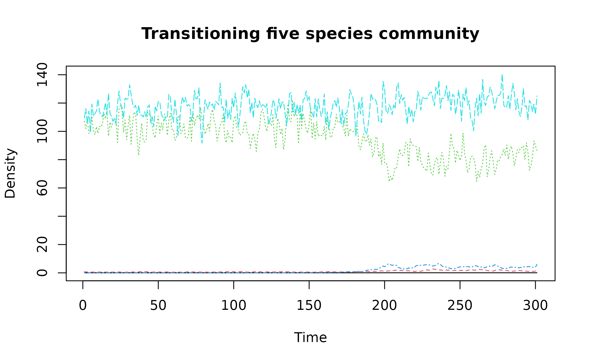
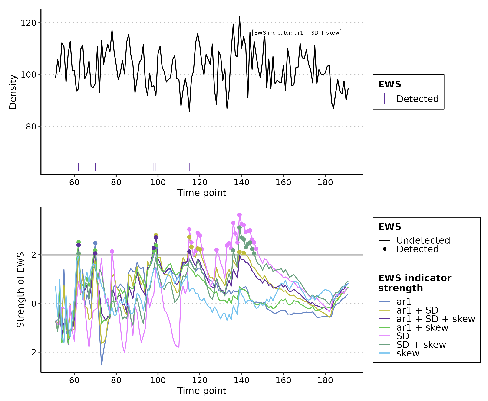
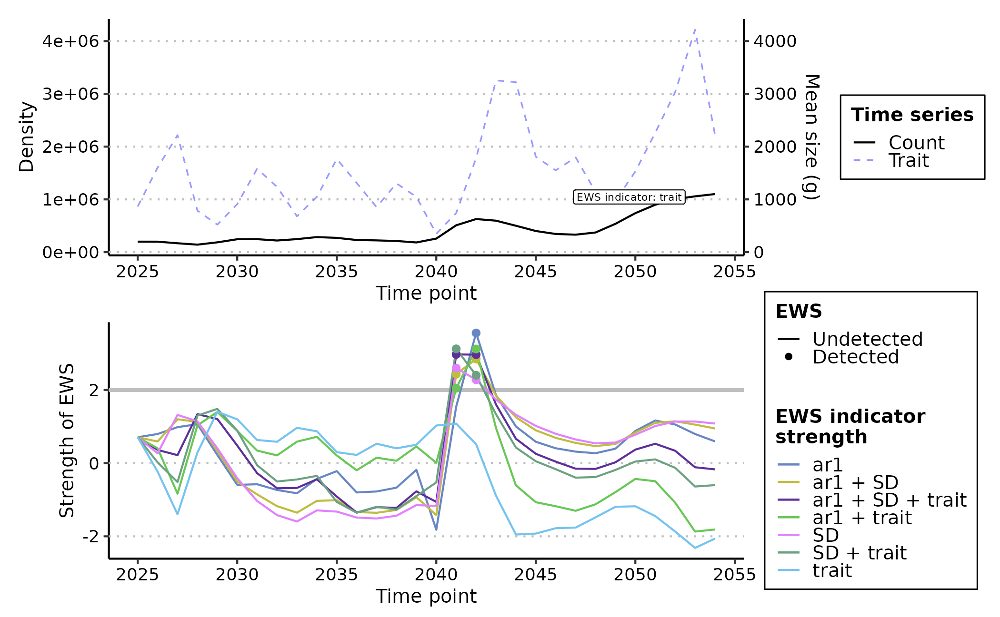

Performing Early Warning Signal Assessments
Duncan O’Brien
2022-08-31
Source:vignettes/ews_assessments.Rmd
ews_assessments.RmdAbout this tutorial
This tutorial introduces how to perform both univariate and multivariate early warning signal (EWS) assessments using EWSmethods. It will give examples of rolling and expanding window approaches for univariate data, introduce trait-based composite EWSs and then conclude with an example of multivariate EWSs.
Greater detail on each function can be found at the Reference page.
Getting started
set.seed(123) #to ensure reproducible data
library(EWSmethods)1. The data
EWSmethods comes bundled with two data objects which allow you to practice using the uniEWS() and multiEWS() functions in both transitioning and non-transitioning data before applying it to your own use case.
"simTransComms" contains three replicate datasets of a simulated five species community that has been driven to transition by the introduction of an invasive species follwing Dakos (2018). This will be our multivariate dataset when using multiEWS() although we may also use each time series in isolation in uniEWS().
"CODrecovery" contains three replicate datasets of a simulated cod ( Gadus morhua ) population that transitions from an overfished to a recovered state following the relaxation of fishing pressure. This data was first published by Clements et al. 2019. While univariate, "CODrecovery" provides extra information on the body size of cod individuals which will improve composite EWSs estimated by uniEWS().
We can visualise a community from each of these datasets using the code below:
matplot(simTransComms$`1_5_1`[,3:7], type = "l", xlab = "Time", ylab = "Density", main = "Transitioning five species community")
plot(x = CODrecovery$`1_20`$time, y = CODrecovery$`1_20`$biomass, type="l", xlab = "Year", ylab = "Abundance", main = "Recovering cod population")
These plots show that a transition takes place at time ~= 180 in "simTransComms$1_5_1" and year ~= 2050 in "CODrecovery$1_20". EWSmethods helpfully provides this information in each dataset under the inflection_pt column.
| simTransComms | CODrecovery |
|---|---|
| 184.5 | 2055 |
However, EWS assessments are only meaningful if performed on data prior to a transition. As both EWsmethods provides the time point of transition, we can truncate our data to only pre-transition.
pre_simTransComms <- subset(simTransComms$`1_5_1`,time < inflection_pt)
pre_CODrecovery <- subset(CODrecovery$`1_20`,time < inflection_pt)Now the data has been loaded and truncated, it can now be passed to uniEWS() and multiEWS() to perform EWS assessments.
2. Univariate EWSs
EWSmethods provides two computational approaches to calculate univariate EWSs via the uniEWS() function - rolling vs expanding windows. The difference between the two is evident in the figure below but simply, rolling windows estimate EWSs in subsets of the overall time series before ‘rolling’ on one data point and reassessing, whereas expanding windows add data points sequentially in to an ‘expanding’ assessment and then standardises against the running mean and standard deviation of the previous window.
Both computational approaches can calculate the same EWS indicators however. A brief outline of each can be found in the following table as well as their reference code in uniEWS().
| EWS indicator | Description |
uniEWS() metric code |
|---|---|---|
| Standard deviation | Increasing variance/standard deviation is observed approaching a transition | "SD" |
| Coefficient of variation | Equivalent to SD as is simply SD at time t divided by the mean SD of the time series | "cv" |
| Autocorrelation at lag1 | Autocorrelation (similarity between successive observations) increases approaching a transition. The value of this indicator can be estimated as either the autocorrelation coefficient estimated from a first order autoregressive model or the estimated autocorrelation function at lag1 |
"ar1" - autoregressive model; "acf"- autocorrelation function |
| Skewness | At a transition, the distribution of values in the time series can become asymmetric | "skew" |
| Kurtosis | Kurtosis represents the system reaching more extreme values in the presence of a transition. Due to the increased presence of rare values in the time series, the tails of the observation distribution widen | "kurt" |
| Return rate | The inverse of the first-order term of a fitted autoregressive AR(1) model. Return rate is the primary quantity impacted by CSD – return rate decreases as a tipping point is approached | "rr" |
| Density ratio | Spectral reddening (high variance at low frequencies) occurs near transition. The density ratio quantifies the degree of reddening as the ratio of the spectral density at low frequency to the spectral density at high frequency | "dr" |
Rolling windows
The rolling window approach is the most commonly used form of EWS computation due to the work of Dakos et al 2012. uniEWS() accepts a method = and a winsize = argument which calls the expanding window method and creates a rolling window winsize% of the total time series length.
Lets use an example where we are interested in the autocorrelation, variance and skewness of one of the five species in pre_simTransComms.
rolling_ews_eg <- uniEWS(data = pre_simTransComms[,c(2,5)],
metrics = c("ar1","SD","skew"),
method = "rolling",
winsize = 50,
y_lab = "Density",
ggplotIt = TRUE)Note how all EWS indicators begin to trend upwards at time ~= 170 which results in the positive Kendall Tau correlation coefficient indicative of an oncoming transition/tipping point.
Expanding windows
Let’s explore the alternative expanding window approach. All we need to change in uniEWS() is the method = argument, and replace winsize = with burn_in =. Instead of dictating the size of the rolling window, burn_in = dictates the number of datapoints uniEWS() is to use to ‘train’ the algorithm. This mitigates the high number of false-positive signals resulting from the short time series length and high variability when few data points are supplied at the beginning of assessment (O’Brien & Clements, 2021).
expanding_ews_eg <- uniEWS(data = pre_simTransComms[,c(2,5)],
metrics = c("ar1","SD","skew"),
method = "expanding",
burn_in = 50,
threshold = 2,
y_lab = "Density",
ggplotIt = TRUE)
#> Warning: Removed 7 row(s) containing missing values (geom_path).
#> Warning: Removed 7 rows containing missing values (geom_point).
Similar to the rolling window approach, EWS indicators calculated by expanding windows have identified warnings from time ~= 170. However we are more confident in this conclusion as the composite metrics also display this warning. These composite metrics simple sum the standardised individual indicator strengths together and are known to provide a more reliable signal than lone indicators (Clements & Ozgul, 2016).
Trait information
The final contribution by uniEWS() is the ability to integrate multiple information sources in the assessment. For example, including body size estimates improves assessment reliability by reducing false positive rate whilst increasing the number of true positives (Clements and Ozgul 2016, Baruah et al. 2020). uniEWS() consequently accepts a trait = argument where an additional trait time series can be combined with the other abundance-based EWSs as a composite metric. This capability is only available if method = "expanding"
trait_ews_eg <- uniEWS(data = pre_CODrecovery[,c(2,3)],
metrics = c("ar1","SD","trait"),
method = "expanding",
trait = pre_CODrecovery$mean.size,
burn_in = 15, #small burn_in due to shorter time series
threshold = 2,
y_lab = "Density",
trait_lab = "Mean size (g)",
ggplotIt = TRUE)
#> Warning: Removed 217 row(s) containing missing values (geom_path).
#> Warning: Removed 7 row(s) containing missing values (geom_path).
#> Warning: Removed 7 rows containing missing values (geom_point).
Troubleshooting
1. reticulate is activating a different environment to the one I gave to ewsnet_init()
This is the main error when using EWSmethods. The first solution is to simply restart the R session and rerun ewsnet_init(). If reticulate is loaded before ewsnet_init() is run, then the default reticulate environment "r-reticulate" is activated instead of your EWSNet environment. Therefore ensure no reticulate command or library(reticulate) is run prior to ewsnet_init().
If the error remains and your RStudio version is >=1.4, you may need to edit your Python interpreter settings in RStudio’s preferences. Go to Preferences -> Python and untick “Automatically activate project-level Python environments”. Then restart your R session and rerun ewsnet_init().
The final solution we are aware of involves deactivating reticulate’s default behaviour in your global R environment settings. Running bypass_reticulate_autoinit() will disable reticulate’s ability to load a Python environment without a user request. Restart your R session and rerun ewsnet_init() once ready.
2. ewsnet_predict() is returning Python errors
These errors are extremely difficult to debug through R . Fortunately, in our experience, such errors are legacies of previous issues such as incorrect initialising of the Python environment, the crashing of an R session, or killing of the running function. The error is therefore often solved by restarting the R session and rerunning ewsnet_init().
If the error remains, please submit a bug report here.
3. I want to uninstall Python and its environments
ewsnet_init() provides the capabaility to do this using the conda_refresh = argument:
ewsnet_init(envname = "envname",conda_refresh = TRUE).
This function will remove any downloaded Python versions, packages or environments to allow a fresh install or permanent removal.
References
Clements, C.F., McCarthy, M.A. & Blanchard, J.L. (2019) Early warning signals of recovery in complex systems. Nature Communications, 10, 1681. doi:10.1038/s41467-019-09684-y
Kéfi S., Dakos V., Scheffer M., Van Nes E.H. & Rietkerk, M. (2013) Early warning signals also precede non-catastrophic transitions. Oikos, 122: 641-648. doi:10.1111/j.1600-0706.2012.20838.x